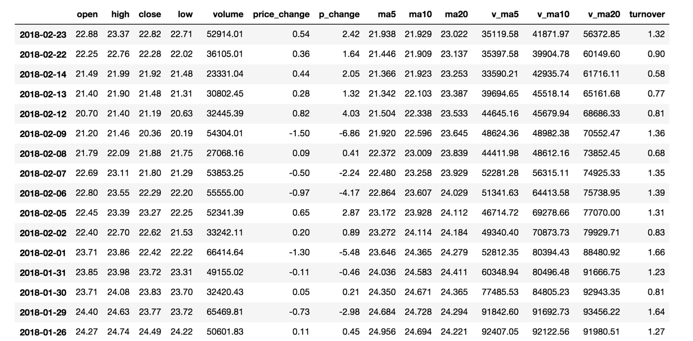

基本数据操作
学习目标
- 目标
- 记忆DataFrame的形状、行列索引名称获取等基本属性
- 应用Series和DataFrame的索引进行切片获取
- 应用sort_index和sort_values实现索引和值的排序
- 应用
- 股票每日数据的操作
为了更好的理解这些基本操作，我们将读取一个真实的股票数据。关于文件操作，后面在介绍，这里只先用一下API
# 读取文件
data = pd.read_csv("./data/stock_day/stock_day.csv")

1、索引操作
Numpy当中我们已经讲过使用索引选取序列和切片选择，pandas也支持类似的操作，也可以直接使用列名、行名
称，甚至组合使用。
pandas的DataFrame的获取有三种形式
- 直接使用行列索引(先列后行)
- 结合loc或者iloc使用索引
- 使用ix组合索引
# 通过行列索引
data['open'][['2018-02-27']]
# 使用loc
# loc:只能指定行列索引的名字
data.loc['2018-02-27':'2018-02-22', 'open']
# 使用iloc
# 使用iloc可以通过索引的下标去获取
data.iloc[0:100, 0:2].head()
# 使用ix进行下表和名称组合做引
data.ix[0:10, ['open', 'close']]
# 相当于
data[['close', 'open', 'high']][0:3]
不支持的操作
# 错误
data[['2018-02-27']]['open']
# 错误
data[:1, :2]
2、对于内容的操作
# 直接修改原来的值
data['close'] = 1
# 或者
data.close = 1
3、排序
排序有两种形式，一种对于索引进行排序，一种对于内容进行排序
- 使用df.sort_values（默认是从小到大)
- 单个键进行排序
- 多个键进行排序
- 使用df.sort_index给索引进行排序
# 按照涨跌幅大小进行排序 , 使用ascending指定按照大小排序
data = data.sort_values(by='p_change', ascending=False)
# 按照过个键进行排序
data = data.sort_values(by=['open', 'high'])
# 对索引进行排序
data.sort_index()